Tutorial: Cycle-Consistent Spatial Transforming Autoencoders
Contents
Tutorial: Cycle-Consistent Spatial Transforming Autoencoders#
By Shuyu Qin, Joshua C. Agar
Department of Mechanical Engineering and Mechanics Drexel University
!pip install m3_learning
Requirement already satisfied: m3_learning in c:\conda\lib\site-packages (0.0.7)
Requirement already satisfied: setuptools==65.5.0 in c:\conda\lib\site-packages (from m3_learning) (65.5.0)
Requirement already satisfied: scikit-image in c:\conda\lib\site-packages (from m3_learning) (0.19.2)
Requirement already satisfied: scikit-learn in c:\conda\lib\site-packages (from m3_learning) (1.0.2)
Requirement already satisfied: torchsummary in c:\conda\lib\site-packages (from m3_learning) (1.5.1)
Requirement already satisfied: py-cpuinfo in c:\conda\lib\site-packages (from m3_learning) (8.0.0)
Requirement already satisfied: jupyter-book in c:\conda\lib\site-packages (from m3_learning) (0.13.1)
Requirement already satisfied: tqdm==4.64.1 in c:\conda\lib\site-packages (from m3_learning) (4.64.1)
Requirement already satisfied: numpy==1.23.4 in c:\conda\lib\site-packages (from m3_learning) (1.23.4)
Requirement already satisfied: torch in c:\conda\lib\site-packages (from m3_learning) (1.12.1)
Requirement already satisfied: matplotlib==3.6.1 in c:\conda\lib\site-packages (from m3_learning) (3.6.1)
Requirement already satisfied: opencv-python in c:\conda\lib\site-packages (from m3_learning) (4.6.0.66)
Requirement already satisfied: pyparsing>=2.2.1 in c:\conda\lib\site-packages (from matplotlib==3.6.1->m3_learning) (3.0.4)
Requirement already satisfied: python-dateutil>=2.7 in c:\conda\lib\site-packages (from matplotlib==3.6.1->m3_learning) (2.8.2)
Requirement already satisfied: kiwisolver>=1.0.1 in c:\conda\lib\site-packages (from matplotlib==3.6.1->m3_learning) (1.3.2)
Requirement already satisfied: pillow>=6.2.0 in c:\conda\lib\site-packages (from matplotlib==3.6.1->m3_learning) (9.0.1)
Requirement already satisfied: fonttools>=4.22.0 in c:\conda\lib\site-packages (from matplotlib==3.6.1->m3_learning) (4.25.0)
Requirement already satisfied: cycler>=0.10 in c:\conda\lib\site-packages (from matplotlib==3.6.1->m3_learning) (0.11.0)
Requirement already satisfied: contourpy>=1.0.1 in c:\conda\lib\site-packages (from matplotlib==3.6.1->m3_learning) (1.0.5)
Requirement already satisfied: packaging>=20.0 in c:\conda\lib\site-packages (from matplotlib==3.6.1->m3_learning) (21.3)
Requirement already satisfied: colorama in c:\conda\lib\site-packages (from tqdm==4.64.1->m3_learning) (0.4.4)
Requirement already satisfied: six>=1.5 in c:\conda\lib\site-packages (from python-dateutil>=2.7->matplotlib==3.6.1->m3_learning) (1.16.0)
Requirement already satisfied: sphinx-jupyterbook-latex~=0.4.6 in c:\conda\lib\site-packages (from jupyter-book->m3_learning) (0.4.7)
Requirement already satisfied: sphinx-design~=0.1.0 in c:\conda\lib\site-packages (from jupyter-book->m3_learning) (0.1.0)
Requirement already satisfied: Jinja2 in c:\conda\lib\site-packages (from jupyter-book->m3_learning) (2.11.3)
Requirement already satisfied: sphinx-copybutton in c:\conda\lib\site-packages (from jupyter-book->m3_learning) (0.5.0)
Requirement already satisfied: sphinx-comments in c:\conda\lib\site-packages (from jupyter-book->m3_learning) (0.0.3)
Requirement already satisfied: sphinx-thebe~=0.1.1 in c:\conda\lib\site-packages (from jupyter-book->m3_learning) (0.1.2)
Requirement already satisfied: sphinxcontrib-bibtex<=2.5.0,>=2.2.0 in c:\conda\lib\site-packages (from jupyter-book->m3_learning) (2.5.0)
Requirement already satisfied: jsonschema<4 in c:\conda\lib\site-packages (from jupyter-book->m3_learning) (3.2.0)
Requirement already satisfied: linkify-it-py~=1.0.1 in c:\conda\lib\site-packages (from jupyter-book->m3_learning) (1.0.3)
Requirement already satisfied: sphinx-external-toc~=0.2.3 in c:\conda\lib\site-packages (from jupyter-book->m3_learning) (0.2.4)
Requirement already satisfied: sphinx<5,>=4 in c:\conda\lib\site-packages (from jupyter-book->m3_learning) (4.4.0)
Requirement already satisfied: sphinx_book_theme~=0.3.2 in c:\conda\lib\site-packages (from jupyter-book->m3_learning) (0.3.3)
Requirement already satisfied: click<9,>=7.1 in c:\conda\lib\site-packages (from jupyter-book->m3_learning) (8.0.4)
Requirement already satisfied: myst-nb~=0.13.1 in c:\conda\lib\site-packages (from jupyter-book->m3_learning) (0.13.2)
Requirement already satisfied: docutils<0.18,>=0.15 in c:\conda\lib\site-packages (from jupyter-book->m3_learning) (0.17.1)
Requirement already satisfied: sphinx-multitoc-numbering~=0.1.3 in c:\conda\lib\site-packages (from jupyter-book->m3_learning) (0.1.3)
Requirement already satisfied: sphinx_togglebutton in c:\conda\lib\site-packages (from jupyter-book->m3_learning) (0.3.2)
Requirement already satisfied: pyyaml in c:\conda\lib\site-packages (from jupyter-book->m3_learning) (6.0)
Requirement already satisfied: pyrsistent>=0.14.0 in c:\conda\lib\site-packages (from jsonschema<4->jupyter-book->m3_learning) (0.18.0)
Requirement already satisfied: attrs>=17.4.0 in c:\conda\lib\site-packages (from jsonschema<4->jupyter-book->m3_learning) (21.4.0)
Requirement already satisfied: uc-micro-py in c:\conda\lib\site-packages (from linkify-it-py~=1.0.1->jupyter-book->m3_learning) (1.0.1)
Requirement already satisfied: nbconvert<7,>=5.6 in c:\conda\lib\site-packages (from myst-nb~=0.13.1->jupyter-book->m3_learning) (6.4.4)
Requirement already satisfied: jupyter-sphinx~=0.3.2 in c:\conda\lib\site-packages (from myst-nb~=0.13.1->jupyter-book->m3_learning) (0.3.2)
Requirement already satisfied: myst-parser~=0.15.2 in c:\conda\lib\site-packages (from myst-nb~=0.13.1->jupyter-book->m3_learning) (0.15.2)
Requirement already satisfied: nbformat~=5.0 in c:\conda\lib\site-packages (from myst-nb~=0.13.1->jupyter-book->m3_learning) (5.3.0)
Requirement already satisfied: ipython in c:\conda\lib\site-packages (from myst-nb~=0.13.1->jupyter-book->m3_learning) (8.2.0)
Requirement already satisfied: importlib-metadata in c:\conda\lib\site-packages (from myst-nb~=0.13.1->jupyter-book->m3_learning) (4.11.3)
Requirement already satisfied: ipywidgets<8,>=7.0.0 in c:\conda\lib\site-packages (from myst-nb~=0.13.1->jupyter-book->m3_learning) (7.6.5)
Requirement already satisfied: jupyter-cache~=0.4.1 in c:\conda\lib\site-packages (from myst-nb~=0.13.1->jupyter-book->m3_learning) (0.4.3)
Requirement already satisfied: ipykernel>=4.5.1 in c:\conda\lib\site-packages (from ipywidgets<8,>=7.0.0->myst-nb~=0.13.1->jupyter-book->m3_learning) (6.9.1)
Requirement already satisfied: ipython-genutils~=0.2.0 in c:\conda\lib\site-packages (from ipywidgets<8,>=7.0.0->myst-nb~=0.13.1->jupyter-book->m3_learning) (0.2.0)
Requirement already satisfied: jupyterlab-widgets>=1.0.0 in c:\conda\lib\site-packages (from ipywidgets<8,>=7.0.0->myst-nb~=0.13.1->jupyter-book->m3_learning) (1.0.0)
Requirement already satisfied: traitlets>=4.3.1 in c:\conda\lib\site-packages (from ipywidgets<8,>=7.0.0->myst-nb~=0.13.1->jupyter-book->m3_learning) (5.1.1)
Requirement already satisfied: widgetsnbextension~=3.5.0 in c:\conda\lib\site-packages (from ipywidgets<8,>=7.0.0->myst-nb~=0.13.1->jupyter-book->m3_learning) (3.5.2)
Requirement already satisfied: debugpy<2.0,>=1.0.0 in c:\conda\lib\site-packages (from ipykernel>=4.5.1->ipywidgets<8,>=7.0.0->myst-nb~=0.13.1->jupyter-book->m3_learning) (1.5.1)
Requirement already satisfied: tornado<7.0,>=4.2 in c:\conda\lib\site-packages (from ipykernel>=4.5.1->ipywidgets<8,>=7.0.0->myst-nb~=0.13.1->jupyter-book->m3_learning) (6.1)
Requirement already satisfied: jupyter-client<8.0 in c:\conda\lib\site-packages (from ipykernel>=4.5.1->ipywidgets<8,>=7.0.0->myst-nb~=0.13.1->jupyter-book->m3_learning) (6.1.12)
Requirement already satisfied: nest-asyncio in c:\conda\lib\site-packages (from ipykernel>=4.5.1->ipywidgets<8,>=7.0.0->myst-nb~=0.13.1->jupyter-book->m3_learning) (1.5.5)
Requirement already satisfied: matplotlib-inline<0.2.0,>=0.1.0 in c:\conda\lib\site-packages (from ipykernel>=4.5.1->ipywidgets<8,>=7.0.0->myst-nb~=0.13.1->jupyter-book->m3_learning) (0.1.2)
Requirement already satisfied: jedi>=0.16 in c:\conda\lib\site-packages (from ipython->myst-nb~=0.13.1->jupyter-book->m3_learning) (0.18.1)
Requirement already satisfied: decorator in c:\conda\lib\site-packages (from ipython->myst-nb~=0.13.1->jupyter-book->m3_learning) (5.1.1)
Requirement already satisfied: prompt-toolkit!=3.0.0,!=3.0.1,<3.1.0,>=2.0.0 in c:\conda\lib\site-packages (from ipython->myst-nb~=0.13.1->jupyter-book->m3_learning) (3.0.20)
Requirement already satisfied: stack-data in c:\conda\lib\site-packages (from ipython->myst-nb~=0.13.1->jupyter-book->m3_learning) (0.2.0)
Requirement already satisfied: pickleshare in c:\conda\lib\site-packages (from ipython->myst-nb~=0.13.1->jupyter-book->m3_learning) (0.7.5)
Requirement already satisfied: backcall in c:\conda\lib\site-packages (from ipython->myst-nb~=0.13.1->jupyter-book->m3_learning) (0.2.0)
Requirement already satisfied: pygments>=2.4.0 in c:\conda\lib\site-packages (from ipython->myst-nb~=0.13.1->jupyter-book->m3_learning) (2.11.2)
Requirement already satisfied: parso<0.9.0,>=0.8.0 in c:\conda\lib\site-packages (from jedi>=0.16->ipython->myst-nb~=0.13.1->jupyter-book->m3_learning) (0.8.3)
Requirement already satisfied: sqlalchemy<1.5,>=1.3.12 in c:\conda\lib\site-packages (from jupyter-cache~=0.4.1->myst-nb~=0.13.1->jupyter-book->m3_learning) (1.4.32)
Requirement already satisfied: nbclient<0.6,>=0.2 in c:\conda\lib\site-packages (from jupyter-cache~=0.4.1->myst-nb~=0.13.1->jupyter-book->m3_learning) (0.5.13)
Requirement already satisfied: nbdime in c:\conda\lib\site-packages (from jupyter-cache~=0.4.1->myst-nb~=0.13.1->jupyter-book->m3_learning) (3.1.1)
Requirement already satisfied: jupyter-core>=4.6.0 in c:\conda\lib\site-packages (from jupyter-client<8.0->ipykernel>=4.5.1->ipywidgets<8,>=7.0.0->myst-nb~=0.13.1->jupyter-book->m3_learning) (4.9.2)
Requirement already satisfied: pyzmq>=13 in c:\conda\lib\site-packages (from jupyter-client<8.0->ipykernel>=4.5.1->ipywidgets<8,>=7.0.0->myst-nb~=0.13.1->jupyter-book->m3_learning) (22.3.0)
Requirement already satisfied: pywin32>=1.0 in c:\conda\lib\site-packages (from jupyter-core>=4.6.0->jupyter-client<8.0->ipykernel>=4.5.1->ipywidgets<8,>=7.0.0->myst-nb~=0.13.1->jupyter-book->m3_learning) (302)
Requirement already satisfied: markdown-it-py<2.0.0,>=1.0.0 in c:\conda\lib\site-packages (from myst-parser~=0.15.2->myst-nb~=0.13.1->jupyter-book->m3_learning) (1.1.0)
Requirement already satisfied: mdit-py-plugins~=0.2.8 in c:\conda\lib\site-packages (from myst-parser~=0.15.2->myst-nb~=0.13.1->jupyter-book->m3_learning) (0.2.8)
Requirement already satisfied: jupyterlab-pygments in c:\conda\lib\site-packages (from nbconvert<7,>=5.6->myst-nb~=0.13.1->jupyter-book->m3_learning) (0.1.2)
Requirement already satisfied: pandocfilters>=1.4.1 in c:\conda\lib\site-packages (from nbconvert<7,>=5.6->myst-nb~=0.13.1->jupyter-book->m3_learning) (1.5.0)
Requirement already satisfied: defusedxml in c:\conda\lib\site-packages (from nbconvert<7,>=5.6->myst-nb~=0.13.1->jupyter-book->m3_learning) (0.7.1)
Requirement already satisfied: beautifulsoup4 in c:\conda\lib\site-packages (from nbconvert<7,>=5.6->myst-nb~=0.13.1->jupyter-book->m3_learning) (4.11.1)
Requirement already satisfied: bleach in c:\conda\lib\site-packages (from nbconvert<7,>=5.6->myst-nb~=0.13.1->jupyter-book->m3_learning) (4.1.0)
Requirement already satisfied: entrypoints>=0.2.2 in c:\conda\lib\site-packages (from nbconvert<7,>=5.6->myst-nb~=0.13.1->jupyter-book->m3_learning) (0.4)
Requirement already satisfied: mistune<2,>=0.8.1 in c:\conda\lib\site-packages (from nbconvert<7,>=5.6->myst-nb~=0.13.1->jupyter-book->m3_learning) (0.8.4)
Requirement already satisfied: testpath in c:\conda\lib\site-packages (from nbconvert<7,>=5.6->myst-nb~=0.13.1->jupyter-book->m3_learning) (0.5.0)
Requirement already satisfied: MarkupSafe>=0.23 in c:\conda\lib\site-packages (from Jinja2->jupyter-book->m3_learning) (2.0.1)
Requirement already satisfied: fastjsonschema in c:\conda\lib\site-packages (from nbformat~=5.0->myst-nb~=0.13.1->jupyter-book->m3_learning) (2.15.1)
Requirement already satisfied: wcwidth in c:\conda\lib\site-packages (from prompt-toolkit!=3.0.0,!=3.0.1,<3.1.0,>=2.0.0->ipython->myst-nb~=0.13.1->jupyter-book->m3_learning) (0.2.5)
Requirement already satisfied: imagesize in c:\conda\lib\site-packages (from sphinx<5,>=4->jupyter-book->m3_learning) (1.3.0)
Requirement already satisfied: sphinxcontrib-jsmath in c:\conda\lib\site-packages (from sphinx<5,>=4->jupyter-book->m3_learning) (1.0.1)
Requirement already satisfied: babel>=1.3 in c:\conda\lib\site-packages (from sphinx<5,>=4->jupyter-book->m3_learning) (2.9.1)
Requirement already satisfied: snowballstemmer>=1.1 in c:\conda\lib\site-packages (from sphinx<5,>=4->jupyter-book->m3_learning) (2.2.0)
Requirement already satisfied: sphinxcontrib-serializinghtml>=1.1.5 in c:\conda\lib\site-packages (from sphinx<5,>=4->jupyter-book->m3_learning) (1.1.5)
Requirement already satisfied: sphinxcontrib-qthelp in c:\conda\lib\site-packages (from sphinx<5,>=4->jupyter-book->m3_learning) (1.0.3)
Requirement already satisfied: alabaster<0.8,>=0.7 in c:\conda\lib\site-packages (from sphinx<5,>=4->jupyter-book->m3_learning) (0.7.12)
Requirement already satisfied: requests>=2.5.0 in c:\conda\lib\site-packages (from sphinx<5,>=4->jupyter-book->m3_learning) (2.27.1)
Requirement already satisfied: sphinxcontrib-applehelp in c:\conda\lib\site-packages (from sphinx<5,>=4->jupyter-book->m3_learning) (1.0.2)
Requirement already satisfied: sphinxcontrib-htmlhelp>=2.0.0 in c:\conda\lib\site-packages (from sphinx<5,>=4->jupyter-book->m3_learning) (2.0.0)
Requirement already satisfied: sphinxcontrib-devhelp in c:\conda\lib\site-packages (from sphinx<5,>=4->jupyter-book->m3_learning) (1.0.2)
Requirement already satisfied: pytz>=2015.7 in c:\conda\lib\site-packages (from babel>=1.3->sphinx<5,>=4->jupyter-book->m3_learning) (2021.3)
Requirement already satisfied: zipp>=0.5 in c:\conda\lib\site-packages (from importlib-metadata->myst-nb~=0.13.1->jupyter-book->m3_learning) (3.7.0)
Requirement already satisfied: urllib3<1.27,>=1.21.1 in c:\conda\lib\site-packages (from requests>=2.5.0->sphinx<5,>=4->jupyter-book->m3_learning) (1.26.9)
Requirement already satisfied: idna<4,>=2.5 in c:\conda\lib\site-packages (from requests>=2.5.0->sphinx<5,>=4->jupyter-book->m3_learning) (3.3)
Requirement already satisfied: charset-normalizer~=2.0.0 in c:\conda\lib\site-packages (from requests>=2.5.0->sphinx<5,>=4->jupyter-book->m3_learning) (2.0.4)
Requirement already satisfied: certifi>=2017.4.17 in c:\conda\lib\site-packages (from requests>=2.5.0->sphinx<5,>=4->jupyter-book->m3_learning) (2021.10.8)
Requirement already satisfied: pydata-sphinx-theme~=0.8.0 in c:\conda\lib\site-packages (from sphinx_book_theme~=0.3.2->jupyter-book->m3_learning) (0.8.1)
Requirement already satisfied: wheel in c:\conda\lib\site-packages (from sphinx_togglebutton->jupyter-book->m3_learning) (0.37.1)
Requirement already satisfied: pybtex-docutils>=1.0.0 in c:\conda\lib\site-packages (from sphinxcontrib-bibtex<=2.5.0,>=2.2.0->jupyter-book->m3_learning) (1.0.2)
Requirement already satisfied: pybtex>=0.24 in c:\conda\lib\site-packages (from sphinxcontrib-bibtex<=2.5.0,>=2.2.0->jupyter-book->m3_learning) (0.24.0)
Requirement already satisfied: latexcodec>=1.0.4 in c:\conda\lib\site-packages (from pybtex>=0.24->sphinxcontrib-bibtex<=2.5.0,>=2.2.0->jupyter-book->m3_learning) (2.0.1)
Requirement already satisfied: greenlet!=0.4.17 in c:\conda\lib\site-packages (from sqlalchemy<1.5,>=1.3.12->jupyter-cache~=0.4.1->myst-nb~=0.13.1->jupyter-book->m3_learning) (1.1.1)
Requirement already satisfied: notebook>=4.4.1 in c:\conda\lib\site-packages (from widgetsnbextension~=3.5.0->ipywidgets<8,>=7.0.0->myst-nb~=0.13.1->jupyter-book->m3_learning) (6.4.8)
Requirement already satisfied: Send2Trash>=1.8.0 in c:\conda\lib\site-packages (from notebook>=4.4.1->widgetsnbextension~=3.5.0->ipywidgets<8,>=7.0.0->myst-nb~=0.13.1->jupyter-book->m3_learning) (1.8.0)
Requirement already satisfied: argon2-cffi in c:\conda\lib\site-packages (from notebook>=4.4.1->widgetsnbextension~=3.5.0->ipywidgets<8,>=7.0.0->myst-nb~=0.13.1->jupyter-book->m3_learning) (21.3.0)
Requirement already satisfied: prometheus-client in c:\conda\lib\site-packages (from notebook>=4.4.1->widgetsnbextension~=3.5.0->ipywidgets<8,>=7.0.0->myst-nb~=0.13.1->jupyter-book->m3_learning) (0.13.1)
Requirement already satisfied: terminado>=0.8.3 in c:\conda\lib\site-packages (from notebook>=4.4.1->widgetsnbextension~=3.5.0->ipywidgets<8,>=7.0.0->myst-nb~=0.13.1->jupyter-book->m3_learning) (0.13.1)
Requirement already satisfied: pywinpty>=1.1.0 in c:\conda\lib\site-packages (from terminado>=0.8.3->notebook>=4.4.1->widgetsnbextension~=3.5.0->ipywidgets<8,>=7.0.0->myst-nb~=0.13.1->jupyter-book->m3_learning) (1.1.6)
Requirement already satisfied: argon2-cffi-bindings in c:\conda\lib\site-packages (from argon2-cffi->notebook>=4.4.1->widgetsnbextension~=3.5.0->ipywidgets<8,>=7.0.0->myst-nb~=0.13.1->jupyter-book->m3_learning) (21.2.0)
Requirement already satisfied: cffi>=1.0.1 in c:\conda\lib\site-packages (from argon2-cffi-bindings->argon2-cffi->notebook>=4.4.1->widgetsnbextension~=3.5.0->ipywidgets<8,>=7.0.0->myst-nb~=0.13.1->jupyter-book->m3_learning) (1.15.0)
Requirement already satisfied: pycparser in c:\conda\lib\site-packages (from cffi>=1.0.1->argon2-cffi-bindings->argon2-cffi->notebook>=4.4.1->widgetsnbextension~=3.5.0->ipywidgets<8,>=7.0.0->myst-nb~=0.13.1->jupyter-book->m3_learning) (2.21)
Requirement already satisfied: soupsieve>1.2 in c:\conda\lib\site-packages (from beautifulsoup4->nbconvert<7,>=5.6->myst-nb~=0.13.1->jupyter-book->m3_learning) (2.3.1)
Requirement already satisfied: webencodings in c:\conda\lib\site-packages (from bleach->nbconvert<7,>=5.6->myst-nb~=0.13.1->jupyter-book->m3_learning) (0.5.1)
Requirement already satisfied: GitPython!=2.1.4,!=2.1.5,!=2.1.6 in c:\conda\lib\site-packages (from nbdime->jupyter-cache~=0.4.1->myst-nb~=0.13.1->jupyter-book->m3_learning) (3.1.29)
Requirement already satisfied: jupyter-server in c:\conda\lib\site-packages (from nbdime->jupyter-cache~=0.4.1->myst-nb~=0.13.1->jupyter-book->m3_learning) (1.13.5)
Requirement already satisfied: jupyter-server-mathjax>=0.2.2 in c:\conda\lib\site-packages (from nbdime->jupyter-cache~=0.4.1->myst-nb~=0.13.1->jupyter-book->m3_learning) (0.2.6)
Requirement already satisfied: gitdb<5,>=4.0.1 in c:\conda\lib\site-packages (from GitPython!=2.1.4,!=2.1.5,!=2.1.6->nbdime->jupyter-cache~=0.4.1->myst-nb~=0.13.1->jupyter-book->m3_learning) (4.0.9)
Requirement already satisfied: smmap<6,>=3.0.1 in c:\conda\lib\site-packages (from gitdb<5,>=4.0.1->GitPython!=2.1.4,!=2.1.5,!=2.1.6->nbdime->jupyter-cache~=0.4.1->myst-nb~=0.13.1->jupyter-book->m3_learning) (5.0.0)
Requirement already satisfied: websocket-client in c:\conda\lib\site-packages (from jupyter-server->nbdime->jupyter-cache~=0.4.1->myst-nb~=0.13.1->jupyter-book->m3_learning) (0.58.0)
Requirement already satisfied: anyio<4,>=3.1.0 in c:\conda\lib\site-packages (from jupyter-server->nbdime->jupyter-cache~=0.4.1->myst-nb~=0.13.1->jupyter-book->m3_learning) (3.5.0)
Requirement already satisfied: sniffio>=1.1 in c:\conda\lib\site-packages (from anyio<4,>=3.1.0->jupyter-server->nbdime->jupyter-cache~=0.4.1->myst-nb~=0.13.1->jupyter-book->m3_learning) (1.2.0)
Requirement already satisfied: PyWavelets>=1.1.1 in c:\conda\lib\site-packages (from scikit-image->m3_learning) (1.3.0)
Requirement already satisfied: networkx>=2.2 in c:\conda\lib\site-packages (from scikit-image->m3_learning) (2.7.1)
Requirement already satisfied: imageio>=2.4.1 in c:\conda\lib\site-packages (from scikit-image->m3_learning) (2.9.0)
Requirement already satisfied: tifffile>=2019.7.26 in c:\conda\lib\site-packages (from scikit-image->m3_learning) (2021.7.2)
Requirement already satisfied: scipy>=1.4.1 in c:\conda\lib\site-packages (from scikit-image->m3_learning) (1.9.2)
Requirement already satisfied: threadpoolctl>=2.0.0 in c:\conda\lib\site-packages (from scikit-learn->m3_learning) (2.2.0)
Requirement already satisfied: joblib>=0.11 in c:\conda\lib\site-packages (from scikit-learn->m3_learning) (1.1.0)
Requirement already satisfied: asttokens in c:\conda\lib\site-packages (from stack-data->ipython->myst-nb~=0.13.1->jupyter-book->m3_learning) (2.0.5)
Requirement already satisfied: pure-eval in c:\conda\lib\site-packages (from stack-data->ipython->myst-nb~=0.13.1->jupyter-book->m3_learning) (0.2.2)
Requirement already satisfied: executing in c:\conda\lib\site-packages (from stack-data->ipython->myst-nb~=0.13.1->jupyter-book->m3_learning) (0.8.3)
Requirement already satisfied: typing_extensions in c:\conda\lib\site-packages (from torch->m3_learning) (4.1.1)
Configuration#
Imports packages#
import matplotlib.pyplot as plt
import numpy as np
import torch
import torch.nn.functional as F
import torch.optim as optim
import torch.nn as nn
from tqdm import tqdm
import cv2
from skimage.filters import sobel
import tarfile
Downloads Files#
!wget -O cards.tar.xz https://github.com/m3-learning/m3_learning/blob/main/m3_learning/Tutorials/Cycle_Consistent_Spatial_Transformer_Autoencoder/data/cards.tar.xz?raw=true
!wget -O 11.12_unsupervised_learn_label_epoch_17957_coef_0_trainloss_0.0008.pkl https://github.com/m3-learning/Unsupervised-rotation-detection-and-label-learning/blob/main/11.12_unsupervised_learn_label_epoch_17957_coef_0_trainloss_0.0008.pkl?raw=true
'wget' is not recognized as an internal or external command,
operable program or batch file.
'wget' is not recognized as an internal or external command,
operable program or batch file.
Extracts Files#
file = tarfile.open('./cards.tar.xz')
file.extractall('./')
file.close()
Data Preprocessing#
Conversion#
# Converts images to grayscale
card1 = cv2.imread("cards/card1.JPG", cv2.IMREAD_GRAYSCALE)
card2 = cv2.imread("cards/card2.JPG", cv2.IMREAD_GRAYSCALE)
card3 = cv2.imread("cards/card3.JPG", cv2.IMREAD_GRAYSCALE)
card4 = cv2.imread("cards/card4.JPG", cv2.IMREAD_GRAYSCALE)
# Normalizes the image based on the max value
card1 = torch.tensor(1 - card1 / card1.max())
card2 = torch.tensor(1 - card2 / card2.max())
card3 = torch.tensor(1 - card3 / card3.max())
card4 = torch.tensor(1 - card4 / card4.max())
# # Resizes the image
# card_small_1 = torch.tensor(F.interpolate(card1.unsqueeze(0).unsqueeze(1), size=(48,48)),dtype=torch.float)
# card_small_2 = torch.tensor(F.interpolate(card2.unsqueeze(0).unsqueeze(1), size=(48,48)),dtype=torch.float)
# card_small_3 = torch.tensor(F.interpolate(card3.unsqueeze(0).unsqueeze(1), size=(48,48)),dtype=torch.float)
# card_small_4 = torch.tensor(F.interpolate(card4.unsqueeze(0).unsqueeze(1), size=(48,48)),dtype=torch.float)
# Resizes the image
card_small_1 = F.interpolate(card1.unsqueeze(0).unsqueeze(1), size=(48,48)).clone().type(torch.float).cpu().numpy()
card_small_2 = F.interpolate(card2.unsqueeze(0).unsqueeze(1), size=(48,48)).clone().type(torch.float).cpu().numpy()
card_small_3 = F.interpolate(card3.unsqueeze(0).unsqueeze(1), size=(48,48)).clone().type(torch.float).cpu().numpy()
card_small_4 = F.interpolate(card4.unsqueeze(0).unsqueeze(1), size=(48,48)).clone().type(torch.float).cpu().numpy()
Raw Data Visulalization#
plt.imshow(card_small_1.squeeze())
<matplotlib.image.AxesImage at 0x2bb9d575b50>

Edge detection#
# Sobel edge detection
card_edge_1 = sobel(card_small_1.squeeze())
card_edge_2 = sobel(card_small_2.squeeze())
card_edge_3 = sobel(card_small_3.squeeze())
card_edge_4 = sobel(card_small_4.squeeze())
# Convert to a tensor
card_edge_1 = torch.tensor(card_edge_1,dtype=torch.float).unsqueeze(0).unsqueeze(1)
card_edge_2 = torch.tensor(card_edge_2,dtype=torch.float).unsqueeze(0).unsqueeze(1)
card_edge_3 = torch.tensor(card_edge_3,dtype=torch.float).unsqueeze(0).unsqueeze(1)
card_edge_4 = torch.tensor(card_edge_4,dtype=torch.float).unsqueeze(0).unsqueeze(1)
Data Generation#
This will generate a bunch of images that are rotated from the initial position
# sets the range and the number of steps to generate images
angle = torch.linspace(0, 2*np.pi, 2000)
# predefines a list
input_data_set_1 = []
input_data_set_2 = []
input_data_set_3 = []
input_data_set_4 = []
for q in angle:
# defines the theta matrix for an affine transformation
theta = torch.tensor([
[torch.cos(q), torch.sin(q) , 0],
[-torch.sin(q), torch.cos(q), 0]
], dtype=torch.float)
# calculates the grid for the affine transformation
grid = F.affine_grid(theta.unsqueeze(0), card_edge_1.size())
# applies the affine transformation to the image
output = F.grid_sample(card_edge_1, grid)
# adds the image to the dataset
input_data_set_1.append(output)
output = F.grid_sample(card_edge_2, grid)
input_data_set_2.append(output)
output = F.grid_sample(card_edge_3, grid)
input_data_set_3.append(output)
output = F.grid_sample(card_edge_4, grid)
input_data_set_4.append(output)
# combines all the data together
input_set_1 = torch.stack(input_data_set_1).squeeze(1)
input_set_2 = torch.stack(input_data_set_2).squeeze(1)
input_set_3 = torch.stack(input_data_set_3).squeeze(1)
input_set_4 = torch.stack(input_data_set_4).squeeze(1)
C:\Conda\lib\site-packages\torch\nn\functional.py:4277: UserWarning: Default grid_sample and affine_grid behavior has changed to align_corners=False since 1.3.0. Please specify align_corners=True if the old behavior is desired. See the documentation of grid_sample for details.
warnings.warn(
C:\Conda\lib\site-packages\torch\nn\functional.py:4215: UserWarning: Default grid_sample and affine_grid behavior has changed to align_corners=False since 1.3.0. Please specify align_corners=True if the old behavior is desired. See the documentation of grid_sample for details.
warnings.warn(
Visualize example rotated images#
plt.imshow(card_edge_1.squeeze())
<matplotlib.image.AxesImage at 0x2bb9d6622b0>

Formulate a single dataset#
input_set = torch.cat((input_set_1,input_set_2,input_set_3,input_set_4),axis=0)
Visualize example images in training data#
for i in range(2000):
if i%200 == 0:
plt.figure()
plt.imshow(input_set_4[i].squeeze())
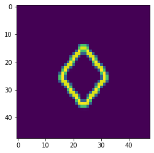
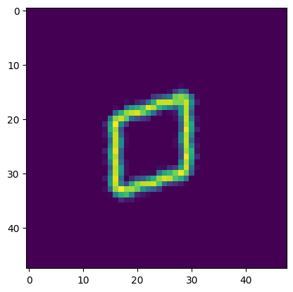
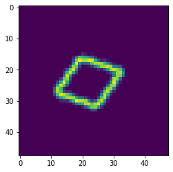
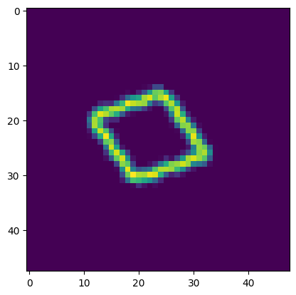
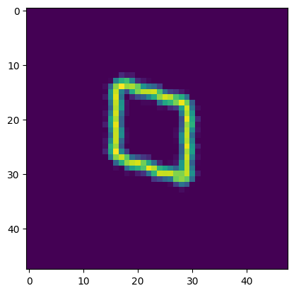
 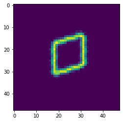
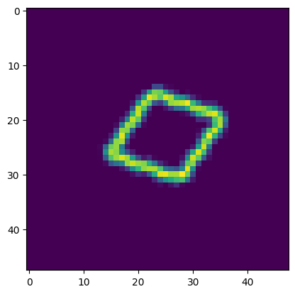
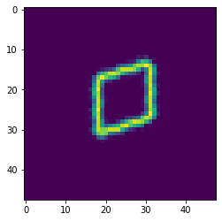
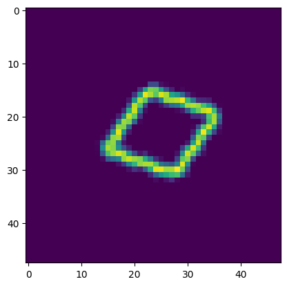
 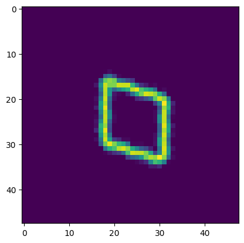
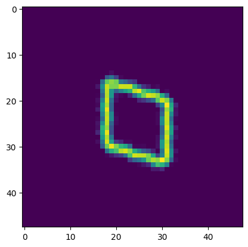
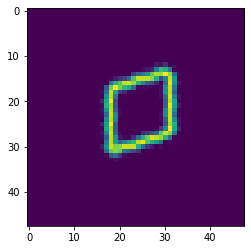
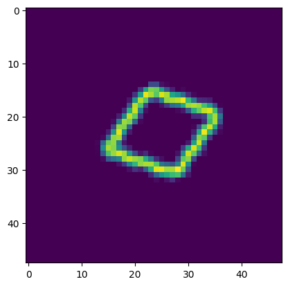
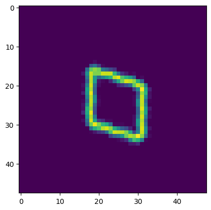
Builds the Neural Network#
Convolutional Block#
This is a standard convolutional block with ReLu. Each block has 4 layers. There is a layer normalization, and ResNet-like message passing.
class conv_block(nn.Module):
def __init__(self,t_size,n_step):
super(conv_block,self).__init__()
self.cov1d_1 = nn.Conv2d(t_size,t_size,3,stride=1,padding=1,padding_mode = 'zeros')
self.cov1d_2 = nn.Conv2d(t_size,t_size,3,stride=1,padding=1,padding_mode = 'zeros')
self.cov1d_3 = nn.Conv2d(t_size,t_size,3,stride=1,padding=1,padding_mode = 'zeros')
self.norm_3 = nn.LayerNorm(n_step)
self.relu_1 = nn.ReLU()
self.relu_2 = nn.ReLU()
self.relu_3 = nn.ReLU()
def forward(self,x):
x_input = x
out = self.cov1d_1(x)
out = self.relu_1(out)
out = self.cov1d_2(out)
out = self.relu_2(out)
out = self.cov1d_3(out)
out = self.norm_3(out)
out = self.relu_3(out)
out = out.add(x_input)
return out
Idenity Block#
This is a single convolutional layer with a layer norm and ReLu activation function
class identity_block(nn.Module):
def __init__(self,t_size,n_step):
super(identity_block,self).__init__()
self.cov1d_1 = nn.Conv2d(t_size,t_size,3,stride=1,padding=1,padding_mode = 'zeros')
self.norm_1 = nn.LayerNorm(n_step)
self.relu = nn.ReLU()
def forward(self,x):
x_input = x
out = self.cov1d_1(x)
out = self.norm_1(out)
out = self.relu(out)
return out
Encoder construction#
This constructs the encoder using the convolutional and identity blocks.
class Encoder(nn.Module):
def __init__(self,original_step_size,pool_list,embedding_size,conv_size):
super(Encoder,self).__init__()
# list of blocks
blocks = []
# defines the orignal step size
self.input_size_0 = original_step_size[0]
self.input_size_1 = original_step_size[1]
# a list that has the number of pooling layers
number_of_blocks = len(pool_list)
# Adds an initial Conv_block, identity block and max pool
blocks.append(conv_block(t_size=conv_size, n_step=original_step_size))
blocks.append(identity_block(t_size=conv_size, n_step=original_step_size))
blocks.append(nn.MaxPool2d(pool_list[0], stride=pool_list[0]))
# adds additional layers based on the number of blocks
for i in range(1,number_of_blocks):
original_step_size = [original_step_size[0]//pool_list[i-1],original_step_size[1]//pool_list[i-1]]
blocks.append(conv_block(t_size=conv_size, n_step=original_step_size))
blocks.append(identity_block(t_size=conv_size, n_step=original_step_size))
blocks.append(nn.MaxPool2d(pool_list[i], stride=pool_list[i]))
# defines the convolutional embedding blocks
self.block_layer = nn.ModuleList(blocks)
self.layers=len(blocks)
original_step_size = [original_step_size[0]//pool_list[-1],original_step_size[1]//pool_list[-1]]
input_size = original_step_size[0]*original_step_size[1]
# defines the initial layer
self.cov2d = nn.Conv2d(1,conv_size,3,stride=1,padding=1,padding_mode = 'zeros')
# defines the conv layer at the end of the conv block
self.cov2d_1 = nn.Conv2d(conv_size,1,3,stride=1,padding=1,padding_mode = 'zeros')
self.relu_1 = nn.ReLU()
self.tanh = nn.Tanh()
# Layer that takes the ouput of the conv block and reduces its dimensionsl to 20
self.before = nn.Linear(input_size,20)
# layer that takes the 20 parameter latent space and learns the embedding of the affine transformation
self.dense = nn.Linear(20,embedding_size)
def forward(self,x):
out = x.view(-1,1,self.input_size_0,self.input_size_1)
out = self.cov2d(out)
for i in range(self.layers):
out = self.block_layer[i](out)
out = self.cov2d_1(out)
# flattens the conv layers so it is 1D
out = torch.flatten(out,start_dim=1)
# Embedding that goes to the classification layer
kout = self.before(out)
# Fully connected layer that helps learn the affine transformation
out = self.dense(kout)
out = self.tanh(out)
theta = out.view(-1,2,3)
# learns the grid of the affine tranformation
grid = F.affine_grid(theta.to(device), x.size()).to(device)
# applies the affine transformation to the image
output = F.grid_sample(x, grid)
return output,kout,theta
Decoder#
class Decoder(nn.Module):
def __init__(self,original_step_size,up_list,embedding_size,conv_size):
super(Decoder,self).__init__()
# Defines the size of the input
self.input_size_0 = original_step_size[0]
self.input_size_1 = original_step_size[1]
# dense layer used for the probability of beloning to each class
self.dense = nn.Linear(4,original_step_size[0]*original_step_size[1])
self.cov2d = nn.Conv2d(1,conv_size,3,stride=1,padding=1,padding_mode = 'zeros')
self.cov2d_1 = nn.Conv2d(conv_size,1,3,stride=1,padding=1,padding_mode = 'zeros')
# list where the blocks are saved
blocks = []
# number of blocks in the model
number_of_blocks = len(up_list)
# adds the blocks to the model
blocks.append(conv_block(t_size=conv_size, n_step=original_step_size))
blocks.append(identity_block(t_size=conv_size, n_step=original_step_size))
for i in range(number_of_blocks):
# adds an upsampling layer to compensate for pooling
blocks.append(nn.Upsample(scale_factor=up_list[i], mode='bilinear', align_corners=True))
original_step_size = [original_step_size[0]*up_list[i],original_step_size[1]*up_list[i]]
blocks.append(conv_block(t_size=conv_size, n_step=original_step_size))
blocks.append(identity_block(t_size=conv_size, n_step=original_step_size))
self.block_layer = nn.ModuleList(blocks)
self.layers=len(blocks)
self.output_size_0 = original_step_size[0]
self.output_size_1 = original_step_size[1]
self.relu_1 = nn.ReLU()
self.norm = nn.LayerNorm(4)
# used to convert probability into classification
self.softmax = nn.Softmax()
# prediction layer for classification
self.for_k = nn.Linear(20,4)
# number of outputs for the classification layer
self.num_k_sparse=1
def ktop(self,x):
# This conduct the classification based on the encoded value
kout = self.for_k(x)
kout = self.norm(kout)
kout = self.softmax(kout)
k_no = kout.clone()
k = self.num_k_sparse
with torch.no_grad():
if k < kout.shape[1]:
for raw in k_no:
# computes the k-top layer
indices = torch.topk(raw, k)[1].to(device)
# creates a one-hot encoded vector
mask = torch.ones(raw.shape, dtype=bool).to(device)
mask[indices] = False
raw[mask] = 0
raw[~mask] = 1
return k_no
def forward(self,x):
# Does the classification
k_out = self.ktop(x)
# uses the classification to the decoder
out = self.dense(k_out)
# reshapes the tensor to be an image of the size of the original image
out = out.view(-1,1,self.input_size_0,self.input_size_1)
# computes the decoder
out = self.cov2d(out)
for i in range(self.layers):
out = self.block_layer[i](out)
out = self.cov2d_1(out)
out = self.relu_1(out)
return out, k_out
Builds the autoencoder#
class Joint(nn.Module):
# Module that combines the encoder and the decoder
def __init__(self,encoder,decoder):
super(Joint,self).__init__()
# encoder and decoder
self.encoder = encoder
self.decoder = decoder
def forward(self,x):
# gets the result from the encoder
predicted,kout,theta = self.encoder(x)
# Builds the theta matrix
# We use an identity to ensure there is no translation
identity = torch.tensor([0,0,1],dtype= torch.float).reshape(1,1,3).repeat(x.shape[0],1,1).to(device)
new_theta = torch.cat((theta,identity),axis=1).to(device)
# Computes the inverse of the affine transoformation
inver_theta = torch.linalg.inv(new_theta)[:,0:2].to(device)
# Calculates the grid for inverse affine
grid = F.affine_grid(inver_theta.to(device), x.size()).to(device)
# Computes the decoder
predicted_base,k_out = self.decoder(kout)
# applies the inverse affine transformation to the decoded base
predicted_input = F.grid_sample(predicted_base, grid)
return predicted,predicted_base,predicted_input,k_out,theta
Sets optional parameters for autoencoder#
# Size of the original image
en_original_step_size=[48,48]
# Defines the pooling layer
pool_list=[2,2,2]
# defines the size of the tensor
de_original_step_size = [4,4]
# Defines how the upsampling should be conducted
up_list = [2,2,3]
# Sets the size of the embedding, this is the number of parameters in the affine
embedding_size=6
# Sets the number of neurons in each layer
conv_size =128
Checks operations#
# checks if cuda is available
print(torch.cuda.is_available())
# Assigns device to cuda
device = torch.device('cuda')
True
Instantiates the model#
# instantiates the encoder
encoder = Encoder(original_step_size=en_original_step_size,
pool_list=pool_list,
embedding_size=embedding_size,
conv_size=conv_size).to(device)
# instantiates the decoder
decoder = Decoder(original_step_size=de_original_step_size,
up_list=up_list,
embedding_size=embedding_size,
conv_size=conv_size).to(device)
# combines the two models
join = Joint(encoder,decoder).to(device)
Instantiate the optimizer#
optimizer = optim.Adam(join.parameters(), lr=3e-5)
Loads pretrained weights#
# if you would like to train this model from scratch set equal to false.
# Note this model takes many hours to train
pretrained = True
if pretrained:
# load the trained weights
path_checkpoint = "./11.12_unsupervised_learn_label_epoch_17957_coef_0_trainloss_0.0008.pkl"
checkpoint = torch.load(path_checkpoint,map_location=torch.device('cpu'))
join.load_state_dict(checkpoint['net'])
encoder.load_state_dict(checkpoint['encoder'])
decoder.load_state_dict(checkpoint['decoder'])
optimizer.load_state_dict(checkpoint['optimizer'])
start_epoch = checkpoint['epoch']
Loss Function#
def loss_function(join,
train_iterator,
optimizer,
ln_parm = 1,
beta = None):
# weight_decay = coef
# weight_decay_1 = coef1
# set the train mode
join.train()
# loss of the epoch
train_loss = 0
# loop for calculating loss
for x in tqdm(train_iterator, leave=True, total=len(train_iterator)):
x = x.to(device, dtype=torch.float)
# update the gradients to zero
optimizer.zero_grad()
# computes the forward pass of the model
predicted_x,predicted_base,predicted_input,kout,theta = join(x)
# combines the loss from the affine and inverse affine transform
loss = F.mse_loss(predicted_base.squeeze(), predicted_x.squeeze(), reduction='mean')\
+ F.mse_loss(predicted_input.squeeze(), x.squeeze(), reduction='mean')
# backward pass
train_loss += loss.item()
# computes the gradients
loss.backward()
# update the weights
optimizer.step()
return train_loss
Model Training#
def Train(join,encoder,decoder,train_iterator,optimizer,
epochs,coef=0,coef_1=0,ln_parm=1, beta=None, epoch_ = None):
# sets the number of epochs to train
N_EPOCHS = epochs
best_train_loss = float('inf')
if epoch_==None:
start_epoch = 0
else:
start_epoch = epoch_+1
# loops around the data set for each epoch
for epoch in range(start_epoch,N_EPOCHS):
# computes the loss
train = loss_function(join,train_iterator,
optimizer,ln_parm,beta)
# updates and prints the loss
train_loss = train
train_loss /= len(train_iterator)
print(f'Epoch {epoch}, Train Loss: {train_loss:.4f}')
print('.............................')
# If the model shows improvement after 50 epochs will save
if best_train_loss > train_loss:
best_train_loss = train_loss
patience_counter = 1
checkpoint = {
"net": join.state_dict(),
"encoder":encoder.state_dict(),
"decoder":decoder.state_dict(),
'optimizer': optimizer.state_dict(),
"epoch": epoch,
}
if epoch >=50:
torch.save(checkpoint, f'/content/drive/MyDrive/cycle_AE_model/11.12_unsupervised_learn_label_epoch:{epoch}_coef:{coef}_trainloss:{train_loss:.4f}.pkl')
Data loader#
Defines an iterator that serves as the data loader
train_iterator = torch.utils.data.DataLoader(input_set, batch_size = 300,shuffle = True)
Trains the model#
if not pretrained:
# unsupervised learn label
Train(join,encoder,decoder,train_iterator,optimizer,50000, epoch_=0)
Validation#
Generates a small dataset for#
# generate the test data set for validation
angle = torch.linspace(0, 7*np.pi, 25)
input_data_set_1 = []
input_data_set_2 = []
input_data_set_3 = []
input_data_set_4 = []
for q in angle:
theta = torch.tensor([
[torch.cos(q), torch.sin(q) , 0],
[-torch.sin(q), torch.cos(q), 0]
], dtype=torch.float)
grid = F.affine_grid(theta.unsqueeze(0), card_edge_1.size())
output = F.grid_sample(card_edge_1, grid)
input_data_set_1.append(output)
output = F.grid_sample(card_edge_2, grid)
input_data_set_2.append(output)
output = F.grid_sample(card_edge_3, grid)
input_data_set_3.append(output)
output = F.grid_sample(card_edge_4, grid)
input_data_set_4.append(output)
input_set_1 = torch.stack(input_data_set_1).squeeze(1)
input_set_2 = torch.stack(input_data_set_2).squeeze(1)
input_set_3 = torch.stack(input_data_set_3).squeeze(1)
input_set_4 = torch.stack(input_data_set_4).squeeze(1)
input_set_small = torch.cat((input_set_1,input_set_2,input_set_3,input_set_4),axis=0)
Builds a validation iterator#
train_iterator = torch.utils.data.DataLoader(input_set_small, batch_size = 100,shuffle = False)
Random sample visualization#
sample = next(iter(train_iterator))
Evaluation#
out,base,inp,kout,theta= join(sample.to(device, dtype=torch.float))
C:\Users\Joshua Agar\AppData\Local\Temp\ipykernel_29528\46853740.py:52: UserWarning: Implicit dimension choice for softmax has been deprecated. Change the call to include dim=X as an argument.
kout = self.softmax(kout)
Visualize the results#
label_ = [card_edge_1,card_edge_2,card_edge_3,card_edge_4]
# Visualize the result
fig,ax = plt.subplots(6,4,figsize=(20,30))
for i in range(6):
j = np.random.randint(0,100)
ax[i][0].title.set_text('input image')
ax[i][1].title.set_text('affine transform')
ax[i][2].title.set_text('generated basis')
ax[i][3].title.set_text(f'Rotation {np.degrees(np.arccos(theta[j][0,0].detach().cpu()))}')
ax[i][0].imshow(sample[j].squeeze())
ax[i][1].imshow(out[j].squeeze().detach().cpu())
#ax[2].imshow((card_small.squeeze()-out[i].squeeze().detach().cpu())**2)
#num = torch.argmax(prob[i])
ax[i][2].imshow(base[j].squeeze().detach().cpu())
ax[i][3].imshow(inp[j].squeeze().detach().cpu())
#ax[3].imshow((label_[num].squeeze()-out[i].squeeze().detach().cpu())**2)
print(kout[j])
tensor([1., 0., 0., 0.], device='cuda:0', grad_fn=<SelectBackward0>)
tensor([0., 1., 0., 0.], device='cuda:0', grad_fn=<SelectBackward0>)
tensor([0., 0., 1., 0.], device='cuda:0', grad_fn=<SelectBackward0>)
tensor([0., 0., 0., 1.], device='cuda:0', grad_fn=<SelectBackward0>)
tensor([0., 0., 1., 0.], device='cuda:0', grad_fn=<SelectBackward0>)
tensor([0., 0., 0., 1.], device='cuda:0', grad_fn=<SelectBackward0>)